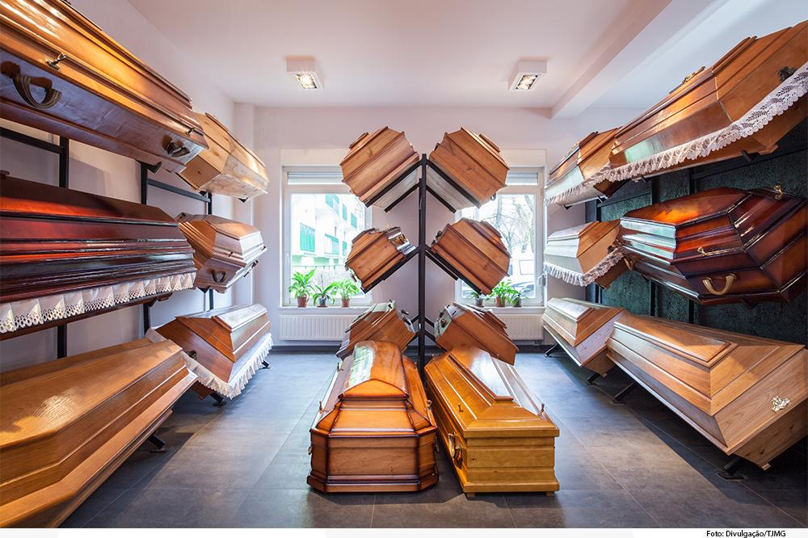
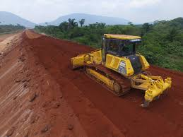

Por que é importante ter um colchão de qualidade?
Os colchões de má qualidade — ou aqueles inadequados para o seu corpo — podem causar problemas de sono, dores e desgastes na coluna. As pessoas com o sono leve são ainda mais sensíveis ao desconforto proporcionado por um colchão ruim. Elas sentem incômodos justamente em um momento que deveria ser de relaxamento.
Essa tensão é prolongada para o restante do dia e ocasiona problemas como estresse, cansaço físico, falta de energia, dores de cabeça, dores musculares, enxaquecas e dificuldades para se concentrar.
Por isso, é recomendado analisar bem o modelo antes de efetuar a compra. Às vezes, um colchão mais maleável pode ser prejudicial à sua saúde, mas o mesmo pode ser dito das espumas mais firmes e consistentes.
Para acertar na escolha, é fundamental avaliar o peso e as medidas das pessoas que deitarão sobre o colchão — além de suas preferências e demandas. Assim, é possível levar para casa o produto perfeito.
Assistência funerária, por que ele é importante?
Ainda que seja inevitável para todo mundo, pouca gente se prepara para o momento da morte. Falar sobre ela já é bem difícil, mas, quando alguém da família morre, junto com todo o sofrimento, vem uma quantidade enorme de trâmites burocráticos, que envolvem desde a certidão de óbito até o funeral.
Uma forma de facilitar esse processo doloroso é contratar um plano de assistência funerária. Esse tipo de plano é uma boa opção para toda a família se preparar para o falecimento de uma forma bem mais tranquila.
Como reconhecer uma semijoia de qualidade?
Com certeza você já passou por isso em algum momento: foi comprar uma semijoia e a peça não durou nem o primeiro uso. Depois disso, você sempre fica desconfiada se esses acessórios são de qualidade. Pensando nisso, separamos algumas dicas de como você pode identificar semijoias de qualidade. Peso, se tiver algum tipo de pedra, as semijoias de qualidade pesam um pouco mais do que as outras. Isso porque o material usado é melhor. Aparência, as semijoias de qualidade costumam ser mais lisas. Além disso, tanto as semijoias de má qualidade quanto as bijuterias tem um efeito opaco. Já as semijoias de qualidade tem um brilho mais natural. Reações alérgicas, uma semijoia de qualidade dificilmente trará alguma reação alérgica.
O que é a terraplenagem?
A terraplenagem nada mais é do que um processo que busca tornar a terra ou um determinado terreno plano. Ele é utilizado principalmente em terrenos que possuem declives e que podem causar problemas na hora de construir uma casa ou um edifício.
Para conseguir realizar tal feito, ele retira a terra dos locais mais altos do terreno e a deposita na parte mais baixa do mesmo, tudo para conseguir deixa-lo plano. Além disso, também consiste na limpeza do terreno, retirando eventuais detritos que lá estejam depositados, retirando inclusive vegetação, restos de árvores e possíveis pedras de maior porte que possam prejudicar a construção da residência em questão. Depois de um estudo de terreno realizado por um profissional vai poder ser feita a escolha do melhor método de terraplenagem para o local em questão para que a construção seja possível. Pode ser ele por meio de escavação, quando a terra é apenas retirada do local, por aterramento, quando é preciso colocar terra no terreno, por meio de drenagem, quando é feita a retirada de água, por destocamento, quando é preciso realizar a retirada de restos de árvores ou plantas, por demolição, quando uma construção já existente é derrubada para dar lugar a outra, ou por meio de compactação do solo, quando são utilizados rolos compressores para gerar estabilidade ao terreno.
É importante que o processo seja feito por profissionais qualificados e competentes. Isso porque uma terraplenagem mal feita pode causar uma série de problemas, como erosão e deslizamento de terra.

Conceito de Restaurante
Entende-se por restaurante ao estabelecimento ou comércio que propicia um serviço de alimentação aos clientes. Ele é um espaço público que qualquer pessoa pode ter acesso, entretanto apesar de ser uma entidade pública, seus serviços são cobrados e, portanto não são gratuitos.
A noção de restaurante existe desde os tempos antigos para a humanidade, embora as formas de pagamento, o atendimento, o ambiente e a qualidade do serviço mudaram consideravelmente. Hoje em dia, um restaurante pode ser um espaço luxuoso da mais alta qualidade, como também um espaço mais relaxado e acessível em termos de preço, onde tanto o atendimento como a comida são simples, porém satisfatórios.
Cosmético
Cosmético é o nome dado aos ingredientes com que se procura conservar a beleza da pele e dos cabelos. São produtos destinados à estética corporal e que se utilizam quer para manter o aspecto exterior ou para tornar o corpo mais atraente e ocultar as suas imperfeições. Não são considerados cosméticos os habituais produtos de limpeza, como sabões e as pastas de dentes, assim como certos produtos cosméticos auxiliares, como o papel demaquilante.
Os cosméticos são vendidos na forma de cremes, soluções, suspensões, emulsões em água ou álcool, óleos vegetais ou animais, gorduras e ceras e também com vaselina e parafina minerais.
Entre os grupos mais importantes de cosméticos estão os cremes para a pele, produtos capilares, produtos para manicure (esmalte para as unhas e removedor), produtos para a depilação, loções para depois de barbear, sais de banho e desodorantes.